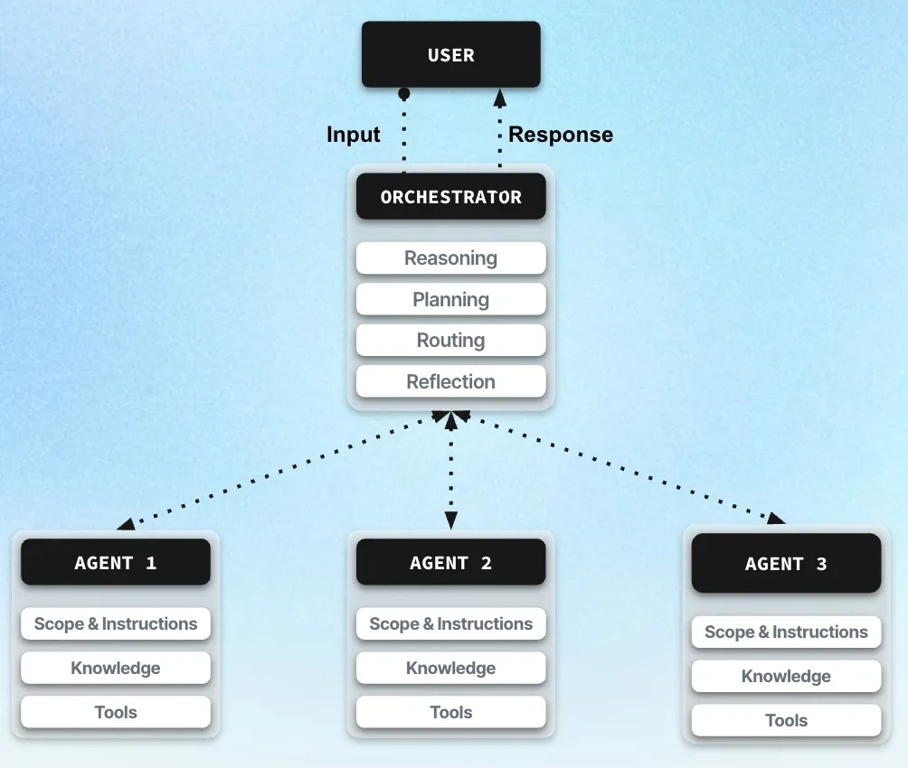
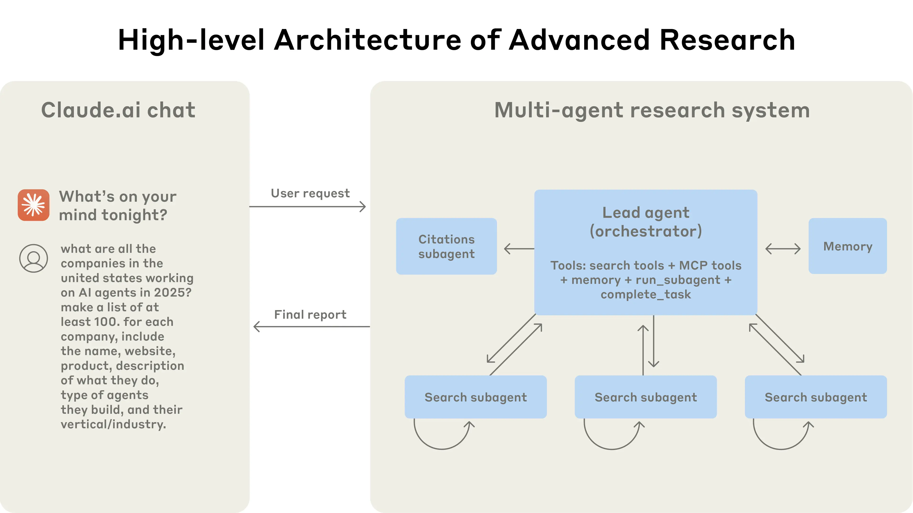
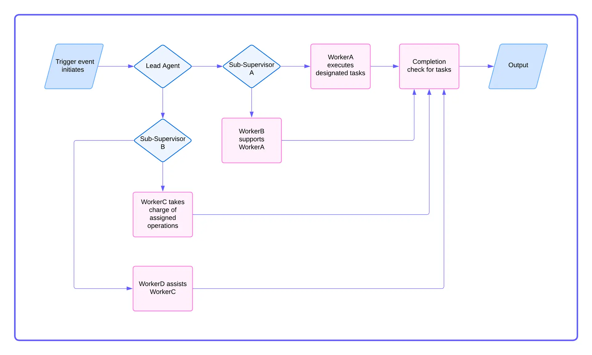
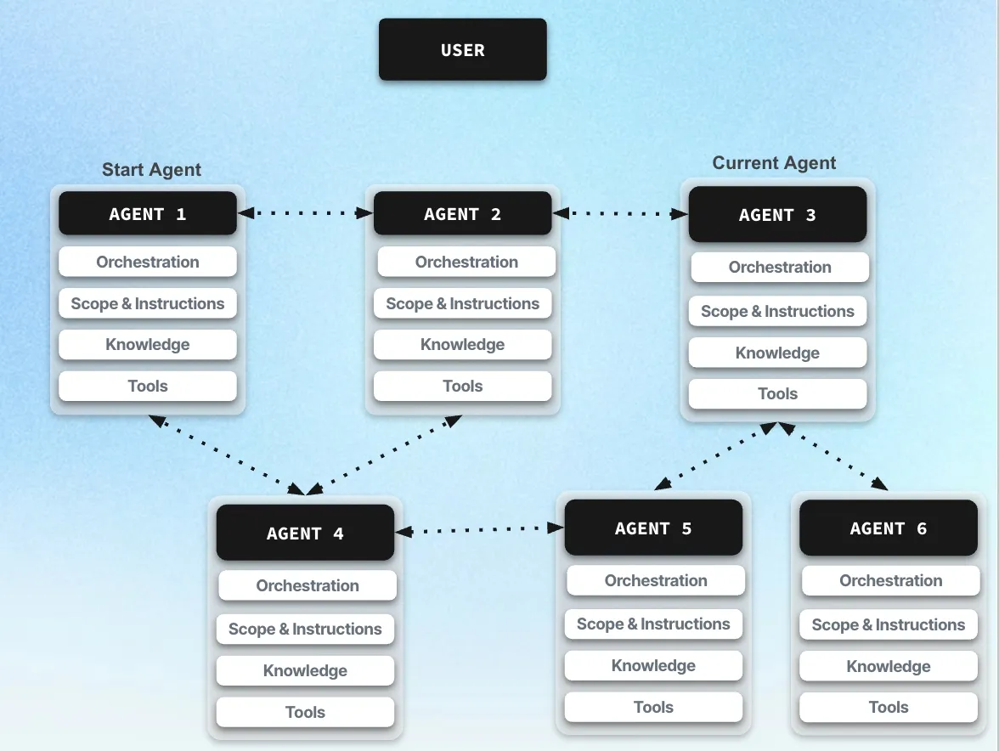

Du Centralisé au Décentralisé
Trois paradigmes fondamentaux chacun répond à un compromis différent entre contrôle, scalabilité et résilience.
Le modèle le plus simple : un orchestrateur unique reçoit la demande, découpe le travail, assigne les tâches aux agents, puis rassemble les résultats. Un seul cerveau au centre, les agents exécutent.
Dans une orchestration centralisée, un orchestrateur unique reçoit la demande, découpe le travail et distribue les tâches aux agents.
Il maintient l’état global : contexte, priorités et dépendances. Il décide aussi l’ordre d’exécution et agrège les résultats.
Ce modèle offre une forte traçabilité et un débogage simple, mais crée un point unique de défaillance.

L’architecture de recherche avancée de Claude.ai , dévoilée en novembre 2024, illustre ce paradigme. un Lead Agent (orchestrateur) central reçoit la requête utilisateur et coordonne l’ensemble du pipeline.
Il dispose d’un accès direct aux outils (search tools, MCP tools, memory, run_subagent, complete_task) et délègue à des sous-agents spécialisés : plusieurs Search subagents parallèles pour la collecte d’information, et un Citations subagent pour la vérification des sources.
L’orchestrateur agrège ensuite les résultats et produit un rapport final renvoyé à l’utilisateur, garantissant une traçabilité complète du flux, au prix d’un point unique de contrôle.

Compromis entre contrôle et passage à l'échelle. On organise les agents en niveaux : un superviseur pilote la mission globale, des sous-orchestrateurs gèrent des sous-parties du travail.
L’architecture hiérarchique organise les agents en niveaux. Un superviseur fixe les objectifs globaux et délègue des sous-tâches à des orchestrateurs intermédiaires.
Chaque niveau peut prendre des décisions locales, tout en remontant des informations vers le niveau supérieur.
Cette structure améliore la scalabilité et la modularité, mais nécessite des mécanismes de coordination entre niveaux.

Dans l’architecture hub-and-spoke d’Azure, le composant central (le hub) supervise les flux réseau, les diagnostics et les politiques de sécurité, tout en déléguant la gestion des ressources aux réseaux spécialisés appelés spokes.
Chaque spoke héberge ses propres machines virtuelles et sous-réseaux, tandis que le hub contrôle les tunnels forcés, les pare-feux, le VPN et les outils de monitoring comme Azure Monitor.
Ce modèle hiérarchique offre une modularité et une scalabilité élevées, mais nécessite une coordination rigoureuse entre les couches réseau.

Pas de "chef" unique. Chaque agent agit avec ce qu'il sait localement. La coordination se fait par échanges directs entre agents, plutôt que par un plan imposé au centre.
Dans une orchestration décentralisée, il n’existe pas de contrôleur central. Chaque agent agit à partir de son information locale.
La coordination émerge des interactions : négociation, consensus, ou partage d’état.
Ce modèle est très robuste et scalable, mais plus difficile à contrôler et à auditer.

Les 3 paradigmes se déclinent en patterns concrets pour les agents LLM. Les frameworks comme LangGraph, AutoGen et CrewAI implémentent ces patterns.